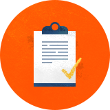
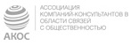

<!DOCTYPE html>
<html>
  <head>
    <meta charset="utf-8">
    <meta http-equiv="X-UA-Compatible" content="IE=edge">
    <title>Title</title>
    <link rel="icon" href="../../../img/favicon.ico" type="image/x-icon">
    <meta name="viewport" content="width=device-width" viewport="width=device-width">
    <link rel="stylesheet" href="https://maxcdn.bootstrapcdn.com/font-awesome/4.5.0/css/font-awesome.min.css">
    <link rel="stylesheet" href="../../../css/style.css">
    <script>if (/*@cc_on!@*/false) {            document.documentElement.className += ' ie10';        }</script>
    <script type="text/javascript" src="http://api-maps.yandex.ru/2.1/?lang=ru_RU"></script>
    <script type="text/javascript" src="https://maps.googleapis.com/maps/api/js"></script>
    <script src="../../../js/app-common.js"></script>
    <script src="../../../js/app.js"></script>
    <script src="../../../js/jquery.pixlayout.0.9.6.js"></script>
  </head>
  <!-- http://jade-lang.com/reference/mixins/-->
  <body>
    <div class="page-wrap">
      <div class="page-wrap service">
        <section id="top" class="primary animate-wrap bg-color">
          <header class="header">
            <div class="width-wrap justifyed">
              <div class="header--links"><a href="" class="show-menu js--show-menu"><i></i></a><a href="" class="header--logo"></a></div>
              <ul class="header--nav">
                <li><a href="" class="animate">About us</a></li>
                <li><a href="" class="animate">Service</a></li>
                <li><a href="" class="animate">Cases</a></li>
                <li><a href="" class="animate">Our expertise</a></li>
                <li><a href="" class="animate">Contact</a></li>
              </ul>
              <div class="container">
                <div class="width-wrap">
                  <div class="acc_trigger"><i></i><a href="">About us</a></div>
                  <div class="acc_container color-violet">
                    <ul class="block">
                      <li><span>Who we are</span></li>
                      <li><a href="">What is CSR</a></li>
                      <li><a href="">Experience and opportunities in CSR</a></li>
                      <li><a href="">Why us?</a></li>
                      <li><a href="">News & coments</a></li>
                      <li><a href="">Our approach</a></li>
                    </ul>
                  </div>
                  <div class="acc_trigger"><i></i><a href="">Service</a></div>
                  <div class="acc_container color-orage">
                    <ul class="block">
                      <li><a href="">What we do</a></li>
                      <li><a href="">Elaborating a vision in the CSR area</a></li>
                      <li><a href="">Creating a documentary base</a></li>
                      <li><a href="">Audit of CSR activities. Development of recommendations</a></li>
                      <li><a href="">Interaction with stakeholders</a></li>
                      <li><a href="">Preparing reports of CSR and sustainable development</a></li>
                    </ul>
                  </div>
                  <div class="acc_trigger"><i></i><a href="">Cases</a></div>
                  <div class="acc_container color-blue">
                    <ul class="block">
                      <li><a href="">Cases</a></li>
                      <li><a href="">Clients</a></li>
                    </ul>
                  </div>
                  <div class="acc_trigger"><i></i><a href="">Our expertise</a></div>
                  <div class="acc_container color-cyan">
                    <ul class="block">
                      <li><a href="">Research reports</a></li>
                      <li><a href="">Essays and reports on the CRS</a></li>
                    </ul>
                  </div>
                  <div class="acc_link"><a href="">Contact</a></div>
                </div>
              </div>
            </div>
          </header>
          <div class="width-wrap">
            <div class="justifyed">
              <aside>
                <ul class="aside-nav">
                  <li class="active"><span>What we do</span></li>
                  <li><a href="">Elaborating a vision in the CSR area</a></li>
                  <li><a href="">Creating a documentary base</a></li>
                  <li><a href="">Audit of&nbsp;CSR activities. Development of&nbsp;recommendations</a></li>
                  <li><a href="">Interaction with stakeholders</a></li>
                  <li><a href="">Preparing reports of&nbsp;CSR and sustainable development</a></li>
                </ul>
              </aside>
              <div class="primary-block">
                <h2 class="animate-el"> What we do</h2>
                <p class="strong animate-el">EmCo&rsquo;s capacity allows&nbsp;us to&nbsp;provide a&nbsp;full range of&nbsp;services in&nbsp;CSR and sustainable development.</p>
                <div class="primary-block__links"><a href="" class="download"><i class="fwa-icon icon-download"></i><span>Credential in CSR</span></a></div>
              </div>
            </div>
          </div>
        </section>
        <section class="content animate-wrap">
          <div class="width-wrap">
            <h4>Based on&nbsp;many years of&nbsp;experience we&nbsp;distinguish five main areas of&nbsp;work on&nbsp;consulting and implementation</h4>
            <ul class="icon-list">
              <li>
                <div class="animate-el"><a href="">Elaboration of a corporate vision in CSR and sustainable development</a></div>
              </li>
              <li>
                <div class="animate-el"><a href="">Creating a&nbsp;documentary framework to&nbsp;determine the company&rsquo;s corporate standards in&nbsp;the CSR and sustainable development</a></div>
              </li>
              <li>
                <div class="animate-el"><a href="">Audit of&nbsp;a&nbsp;company&rsquo;s activities in&nbsp;CSR and sustainable development</a></div>
              </li>
              <li>
                <div class="animate-el"><a href="">Building interaction with stakeholders, implementing systems to&nbsp;study their requests.</a></div>
              </li>
              <li>
                <div class="animate-el"><a href="">Preparation of&nbsp;reports on&nbsp;CSR and sustainable development in&nbsp;accordance with international standards.</a></div>
              </li>
            </ul>
          </div>
        </section>
      </div>
      <script type="text/javascript">$(function(){$.pixlayout({src: "../../../img/temp/serviece_what.jpg",opacity: 0.5,top: 0,left: 0,center: false,clip: true,show: false});});</script>
      <div class="psevdofooter"></div>
      <footer class="footer">
        <div class="width-wrap justifyed"><a href="#top" class="js--page-slide page-slide"></a>
          <div class="footer--links">
            <div class="justifyed mobile-img"></div><span>Questions or comments?</span>
            <div class="btn-wrap"><a href="../pagePopup/pagePopup-message.html" class="fancybox.ajax fancy btn"><i class="fwa-icon icon-mail"></i>Drop us a line</a></div><span>© 2007— 2016, EmCo   Created by —<a href="">Adlabs</a></span>
          </div>
          <div class="footer--partners"></div>
        </div>
      </footer>
    </div>
  </body>
</html>